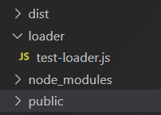
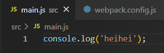
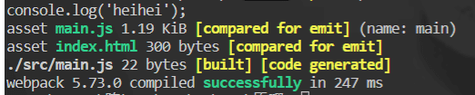
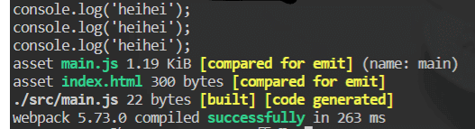
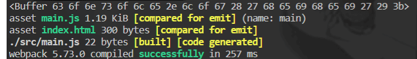
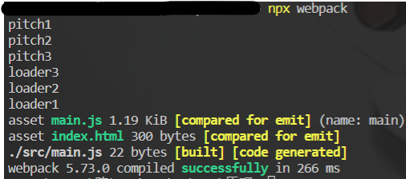
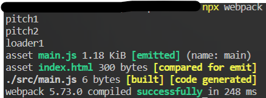
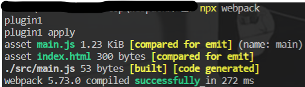
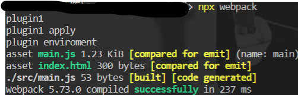

Webpack原理
Webpack原理
Loader原理
loader概念
帮助webpack将不同类型的文件转化为webpack可识别的模块
loader分类
pre：前置loadermormal：普通loaderinline：内联loaderpost：后置loader
执行顺序pre > mormal > inline > post
相同优先级的loader执行顺序：从右到左（从下到上）
例如：
1 | //执行顺序：loader2 -> loader1 |
可以通过在loader配置中添加enforce项，来确定loader是pre还是normal或post
例如：
1 | //执行顺序：loader1 -> loader2 -> loader3 |
内联loader就比较特殊了，它是在 import 语句中显式的调用
例如：
1 | import Style from 'style-loader!css-loader!./style.css' |
含义：
- 通过
!将每一个loader分割开 - 使用
style-loader和css-loader来处理style.css文件
内联loader可以通过添加不同前缀，跳过其他类型loader
!跳过 normal loader （与每一个loader之后用于分割的!区别开来）
例如：import Style from '!style-loader!css-loader!./style.css'
它意味着当webpack配置中有一个noraml loader匹配上style.css文件时，也不执行那个loader。只使用我们这里内联的style-loader来处理-!跳过 pre 和 normal loader
例如：import Style from '-!style-loader!css-loader!./style.css'!!跳过 pre、normal、post loader
例如：import Style from '!!style-loader!css-loader!./style.css'
内联loader一般不建议使用，因为它不好复用
开发一个loader
我们在项目根目录下新建loader文件，用于保存我们写的loader

loader本质上就是一个函数
1 | /* |
然后在webpack配置中使用我们的loader
1 | const path = require('path') |
我们在src下的main.js中写了一些代码用于测试

然后我们打包一下，就可以在控制台看到结果：在控制台打印了我们在main.js中写的代码。

得到这一结果的流程是：
我们从入口文件main.js来开始打包（这里也就只有这一个文件要打包）。
然后在webpack配置中匹配到可以用来处理js文件的loader，然后他就顺着路径找到了我们定义的那个test-loader。
然后会将整个main.js中的代码传入test-loader中进行处理，所以就打印出了main.js中的代码
我们将test-loader进行多次配置
1 | module.exports = { |
让我们看一下控制台的结果：这就印证了我们之前说的，当某个文件匹配上一个loader，它还会试着去匹配其他loader（就是没有个文件，都会遍历所有loader）

Loader分类
同步loader
写法一：
1 | module.exports = function(content, map, meta) { |
写法二：
这种写法的好处在于当loader出现错误时可以将错误传出去，并且当有map时可以继续将map和map传递给下一个loader
1 | module.exports = function(content, map, meta) { |
异步loader
写法：
1 | module.exports = function(content, map, meta) { |
raw loader
raw loader接收到的content内容是一个Buffer数据流（2进制）。一般在处理图片、字体图标等文件时会用到
写法一：
1 | module.exports = function(content) { |
写法二：
1 | function RawLoader (content) { |
控制台打印的结果：

pitch loader
pitch loader就是在loader中再定义一个pitch方法，他会先于loader执行
下面就是一个pithc loader。
1 | module.exports = function(content) { |
然后我们定义三个pitch loader，它们只有打印输出的东西不同
1 | module: { |
控制台打印的结果：当定义多个pitch loader时，它们会先从左到右（从上到下）执行每一个loader中的pitch方法，然后再从右到左（从下到上）调用loader本身

同时它还有一种 “熔断机制” ，当某一个pitch loader的pitch方法有返回值时，会跳过之后的loader以及本身loader不执行，直接来到上一个loader
例如：我们在loader2的pitch方法中定义了返回值
1 | module.exports = function(content) { |
控制台打印的结果：

我们来分析一下控制台打印的结果：首先是执行loader1的pitch方法，打印了”pitch1”，
然后来到loader2的pitch方法，打印了”pitch2”，loader2的pitch方法有返回值，所以他会跳过在他后面的loader3不执行，同时也会跳过自己的loader不执行，返回到上一个loader，来执行loader1，打印”loader1”
pitch loader可以用于 要用多个loaer执行任务时，某个loader出现了问题就提前中断，不执行后面的loader
loader API
| 方法 | 含义 | 用法 |
|---|---|---|
| this.async | 异步回调loader，返回this.callback | const callback = this.async() |
| this.callback | 可以同步或异步调用并返回多个结果 | this.callback(err, content, suorceMap?, meta?) |
| this.getOptions | 获取loader的options | this.getOptions(schema) |
| this.emitFile | 产生一个文件 | this.emitFile(name, content, sourceMap) |
| this.utils.contextify | 返回相对路径 | this.utils.contextify(context, request) |
| this.utils.absolutify | 返回绝对路径 | this.utils.absolutify(context, request) |
还有许多其他API，可以去官网查看
Plugin原理
通过插件我们可以扩展webpack，加入自定义的构建行为，使webpack可以干更多的事。
工作原理： webpack就像是一条生产线，要经过一系列处理流程之后才可以将源文件转化成输出结果。插件就是可以插入到这条生产线中的一个功能，插件在特定的时机对它所关心的东西进行操作
从代码逻辑的角度来说：webpack在编译代码的过程中，会触发一系列Tapable钩子事件，插件所要做的就是找到相应的钩子，往上面挂载自己的任务。这样，当webpakc构建的时候，插件注册的事件就会随着钩子的触发而执行
钩子： 为webpack提供了统一的插件接口类型定义。它是webpack的核心功能库，可以去官网查看钩子
Tapable统一暴露了三个方法给插件，用于注入不同类型的自定义构建行为
tag：可以注册同步钩子和异步钩子tagAsync：回调方式注册异步钩子tagPromise：Promise方式注册异步钩子
Plugin构建对象
Compiler
compiler对象保存着完整的webpack环境配置，每次启动webpack构建时它都是独一无二，仅仅会创建一次的对象
通过它可以访问的到webpack的主环境配置。比如entry，loader，plugin等
它主要有以下属性：
compiler.options访问webpack所有配置complier.hooks可以注册tapable的不同种类hook，从而可以在compiler生命周期中植入不同的逻辑compiler.inputFileSystem和compiler.outputFileSystem可以进行文件操作，类似nodejs的fs模块
Compilation
compilation对象表示一次资源的构建。
一个compilation对象会对构建依赖中所有模块，进行编译。
在编译阶段，模块会被加载，封存，优化，分块，哈希和重新创建
它主要有以下属性：
compilation.modules可以访问所有模块，打包的每一个文件都是一个模块compilation.chunkschunks就是多个modules组成而来的一个代码块，入口文件引入的资源组成一个chunk，通过代码分割的模块又是另外的chunkcompilation.assets可以访问本次打包生成的所有文件的结果compilation.hooks可以注册hook
开发一个插件
最简单的插件
我们先定义一个简单的插件，插件的本质是一个类，有最基本的apply方法和构造函数
1 | class plugin1 { |
然后我们将他配置在webpack中使用
1 | const path = require('path') |
控制台打印的结果：

注册hooks
可以去文档查看有哪些hooks（钩子）可以进行注册
1 | class plugin1 { |
控制台打印的结果：
